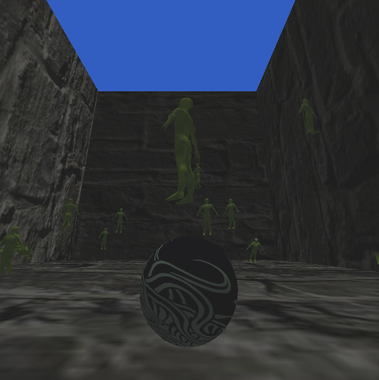

View the source


Shetland Engine is a 3D game engine created over the course of a semester. It was developed in C++ with OpenGL for graphics. We used GLFW to create windows and receive input, SOIL for texture loading, and GLM for data structures (vec3's and mat4's) to store object positions and camera projections for world rendering. The GameManager controls the main game tick, object spawning, and mesh loading, which are stored in a hash map with the file name as the key and the mesh object as the value, ensuring each mesh only loads once. The WindowManager controls screen rendering and user input. GameObjects use OBBs for collision detection.
The engine has no visual interface, but allows for inital object spawning in the main function before the game loop starts. Objects control their behavior in their own update loop, and can spawn more game objects while the game is running. We used the engine to make a simple shooting gallery, lovingly titled The Ball of Cthulhu, in which you throw balls at spinning Cthulhus to banish them back from whence they came.
I was one of only two programmers to work on the code, and was the one who pieced together the engine and its activity flow: we had all of the individual sections of the engine prepared through separate assignments, and I brought them all together and made them work as a fluid engine, which included the creation of overarching GameManager and WindowManager classes to handle everything.
This project was incredibly stressful, complicated, and satisfying. While it was simple, creating a game engine of any scale is never anything to scoff at. While it was difficult, I've actually been tempted many times to go back and continue work on it. I wouldn't intend for it to ever become anything incredibly usable, but it's a great learning experience, and I definitely value the knowledge it has given me in regards to graphics pipelines and engine functionality.